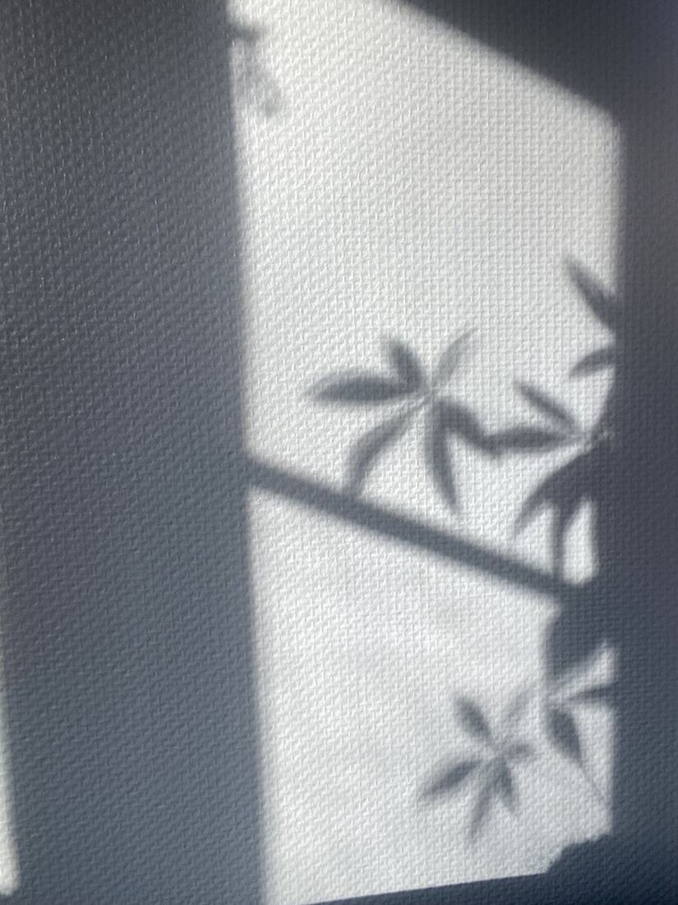
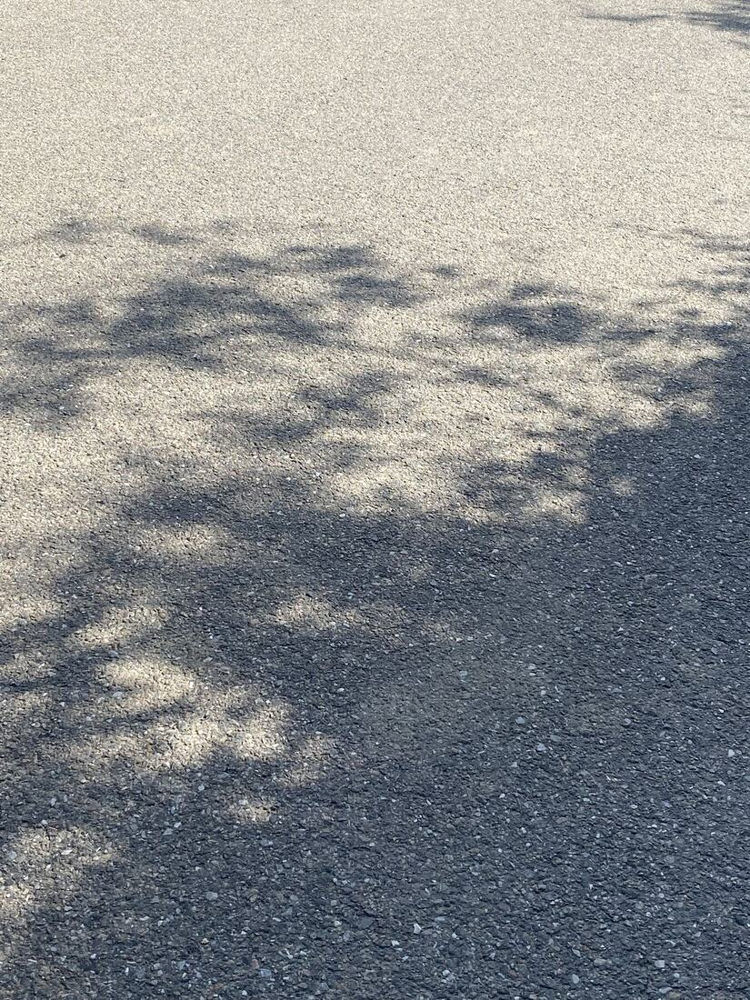
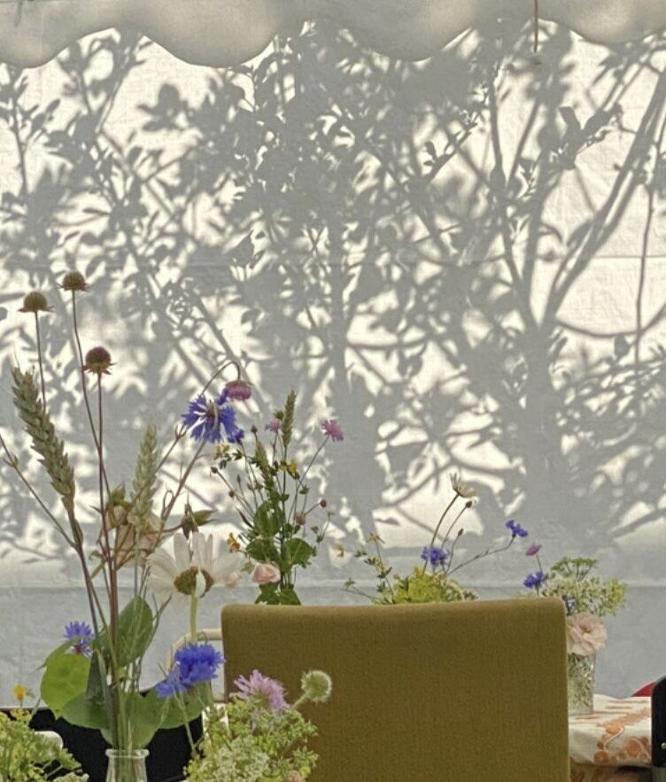

Vejen til fornyet seksualitet
Med specialiseret sexologi og parterapi, og ældgamle visdomme fra astrologi, feng shui og tantra-yoga, tilbyder jeg et sikkert miljø for heling og selvopdagelse.
Sexologisk terapi individuelt
Min terapi er for dig, som ønsker at bryde med mønstre af manglende lyst og forbinde dig dybere med din krop. Jeg tilbyder skræddersyede sessioner med særlig opmærksomhed på de dybere årsager bag din seksuelle og kropslige selvopfattelse.
- Manglende lyst
- Seksualitets- og kropsbevidsthed
- Kærlighedsdilemmaer
- Smerter ved sex
- Præstationsangst
- Udfordringer med orgasme & nydelse
- Kærestesorg / skilsmisse
Emner jeg arbejder med
- Seksuel opvågnen – at opdage og acceptere sin seksualitet
- Seksuel selvopdagelse – at forstå, hvad der tænder dig, og hvad der ikke gør
- Seksuel nydelse – hvordan man opnår og forstår nydelse
- Intimitetsrådgivning – at opbygge eller styrke intime relationer
- Seksuel sundhed – fysisk, mentalt og socialt velbefindende
- Kropslig frihed – at føle sig fri og komfortabel i egen krop
- Egenkærlighed og selvpleje
- Tantrisk/tao sex og meditation – seksualitet, spiritualitet og kropsbevidsthed
- Seksuel lyst og tiltrækning
- Seksuel identitet og orientering
Holistisk parterapi
I mange forhold kan forskelle i lyst skabe afstand og misforståelser. Jeg hjælper par med at navigere gennem lystforskelle og dykke dybere ind i hinandens seksuelle universer – med et klart fokus på seksuelle dynamikker, polaritet og forskellen mellem den feminine og maskuline seksualitet.
Jeg tilbyder et støttende og ikke-dømmende rum, hvor I sammen kan lære at kommunikere om ønsker og grænser, udforske nye dimensioner af jeres seksualitet og genopdage glæden ved fysisk og følelsesmæssig intimitet.

Vaginal-terapi
Vaginal-terapi kombinerer samtaleterapi og terapeutiske vaginale tryk, hvor kost, døgnrytme, øvelser og dit selvbillede er en del af forløbet. Fokus på både det fysiske og det psykiske gør terapien hel.
Vaginal-terapi hjælper mod:
- Smerter, kramper og spændinger i underlivet – typisk ved samleje og onani
- Vulvodyni og vaginisme
- Manglende orgasme pga. manglende følsomhed og kontakt
- Aftagende lyst og smerter ved samleje efter en fødsel
- Smertefuld menstruation
Et typisk forløb varer 5–30 uger med en ugentlig session. Kosten tager udgangspunkt i Maharishi Ayurveda (kan også følges som vegetar/veganer). Alle forløb indledes online; fysiske sessioner foregår i Nordsjælland i rolige rammer – altid med tydelig intention, samtykke og respekt. Vaginal-terapi tilbydes kun til kvinder.
Yoni-workshop
En unik, spirituel og dybt indsigtsfuld aften, hvor vi går i dybden med den feminine seksualitet, kvindens lyst og hvad tantra er – mens I syr jeres helt egen yoni-kunst. Kreativitet ligger i samme center som lyst, og det skaber en direkte kontakt til din lyst.
Jeg kigger på jeres personlige horoskoper og fortæller kort, hvad jeg ser inden for din seksualitet og dit kærlighedssprog. Der er også mulighed for at trække tarot- eller englekort.


Polterabend
En uhøjtidelig og humoristisk stund sammen, som ofte fører masser af latter og smil med sig.
- Hjertemeditation (kan også bruges sammen med en partner)
- Kvindens seksualitet, lyst & orgasme
- Hvad er tantra – og to opvarmningsøvelser
- Personligt horoskop for hovedpersonen
- To spirituelle lege
- Gave til hovedpersonen (yoni-kunst)
Tantra-yoga
Kun 5% af tantra handler egentlig om det seksuelle. Tantra er en livsfilosofi om nærvær, bevidsthed og forbindelse – til dig selv, din krop og andre.
Som certificeret tantra-yogalærer inddrager jeg tantra som samtaleterapi, guidning i vejrtrækning, opmærksomhed og refleksion. Du får øvelser og praksisser, som du selv arbejder videre med derhjemme.
Lad os udforske mulighederne sammen
For at booke din/jeres personlige session kan du kontakte mig via sms på 21 21 88 94.
Lyst & håb, Nadja